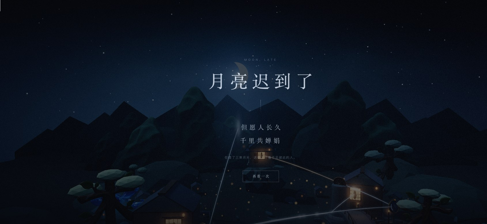

正在准备模型预览…LUX3D · 核心交互件
AHOLO 3D AI HACKATHON · PROJECT REPORT
借一束月光，
照亮远方。
《月亮迟到了》是一段关于思念的 3D 解谜。山遮住月亮，玩家转动铜镜、移动小舟，将一束光送进三扇彼此看不见的窗。

山隙 → 铜镜 → 窗玩法画面 · 较早版本
THE ROLE OF LUX3D
从意象山谷到
可交互主角
全场景共接入 8 件 Aholo Lux3D GLB 模型：既有「山、水、火、木、月」五件东方意象资产，也有通过 Lux3D OpenAPI 实时生成的三件核心交互主角——精雕古铜镜、宋风乌篷小舟与自动绑骨动作重定向的望月书生。
玩家在浏览器中直接旋转的古铜镜、沿河道曲线航行的乌篷小舟，以及点亮三扇窗后浮现微动的窗内书生（通过 Lux3D 自动绑骨 52 根骨骼并重定向三组静立/提灯/倚栏动作，由 Three.js AnimationMixer 驱动），全部来自真实 Lux3D 资产与工作流。
EIGHT LUX3D 3D ASSETS
八个模型，完整世界
直接查看 Lux3D 原始模型与绑骨资产，也可下载 GLB 文件。
正在准备模型预览…LUX3D · 核心交互件
正在准备模型预览…LUX3D · 自动绑骨 + 3 组动作
人 · 望月书生（绑骨动画）
由 Lux3D 极速版生成 A-pose 人物后，调用官方自动绑骨（52 根骨骼）与动作重定向（Idle_Loop / Idle_Lantern_Loop / Idle_Rail_Loop），在三扇窗内通过 AnimationMixer 呈现不同守候姿态。
正在准备模型预览…LUX3D · 意象模型
正在准备模型预览…LUX3D · 意象模型
正在准备模型预览…LUX3D · 意象模型
正在准备模型预览…LUX3D · 意象模型
正在准备模型预览…LUX3D · 意象模型
FROM MODEL TO EXPERIENCE
从 3D 资产到一束光
把模型、场景和玩法连接成一段完整的短篇体验。
导入与适配
通过 GLTFLoader 加载五个 GLB；依据包围盒计算比例和居中位置，再复制实例、设置旋转与位置。
统一夜景
克隆材质并调整色调、粗糙度、金属感和发光；用雾、暖窗与光晕把不同资产放进同一片夜色。
加入玩法
用代码制作铜镜、桥、舟、窗及光束。根据镜面角度判断光路，按顺序点亮东窗、对岸和山寺。
试玩与调整
根据反馈重新设计月亮，为山和树增加自然轮廓；扩大末关铜镜的点击范围，并加入角度吸附。

THE ENDING
千里之外，
共看一轮月。
三扇窗被依次照亮后，月亮越过山脊。先前借来的光仍留在山谷里，陪着故事走到结尾。
后续版本 · 通关结尾截图TECHNICAL NOTES
实现与体验
使用 Three.js、Vite 与 WebAudio；音效由 WebAudio 合成。镜面转动、舟的移动、窗口解锁、光束、水面和环境粒子由程序控制。光线是为玩法设计的模拟，而非物理级光线追踪。
这是一个可从头玩到结尾的短篇原型。模型文件合计约 40 MB，首次加载需要等待；竖屏可能裁切部分画面，建议使用支持 WebGL 的桌面浏览器。